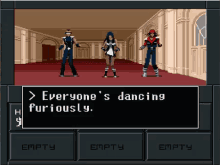
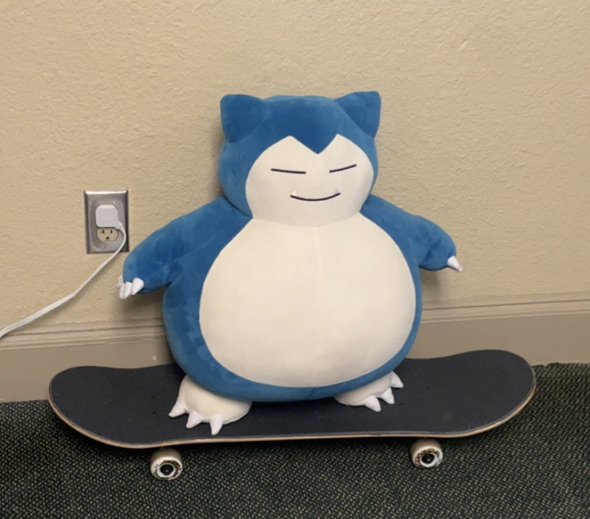
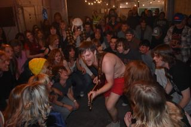
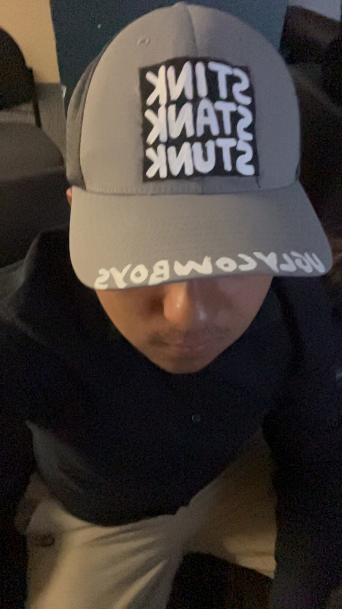

This is a homepage that I made for a project in my UNIX Programming class in the spring of 2026.
I haven't done HTML in a hot minute, so bear with how rough it may look.
Broke it while skateboarding. This sucks.
While trying to go up and down an incline, I landed on my ankle and ended up fracturing my fibula.

As of the time that I'm typing this, I'm in my UNIX Programming class in a wheelchair, later I'm about to swap it out for a knee scooter. Using the wheelchair puts a lot of strain on my arms.
Even if everything kinda sucks now, for some reason I still believe it'll work out somehow, even if it's not the way I want it to and if I can barely walk.
And for the love of God, if you're skating up and down an incline, take a leaf out of my book and make sure you get the hang of your balancing first.
I'm still going strong.
I've wondered when the first time I might break a bone would be. At least I did it while doing something cool.
On a more lighthearted note, for spring break I stayed in the Dallas-Fort Worth area in Texas for spring break with my friend Rodrigo!
While there, I visited the Stockyards, Netflix House, and visited a Scheel's. I had no idea you could buy katanas and desert eagles in the same building.


It was a lot of fun.
He also convinced me to binge-watch ALL of Jujutsu Kaisen, which was worth it.
Earlier in March, I also went to the Release Radar Setlist and saw Ready or Not 2. In the same night. It was a fun day.
There, I actually got a hat from The Ugly Cowboys. This was my second time ever going to see a local show, after the rave earlier this month, and I'm glad I went. That's how I also found out about the scene Stillwater has. This place is cool.

